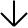

menu
close


65 80 80 76 89
Modern scientific research to many outsiders often seems non-transparent and distant due to the sophisticated techniques scientists nowadays use to carry out their research.
As such, many young students sometimes find modern scientific research intimidating or even confusing.
A.S.T.R.A.L. plans to change that.
our programs focus on making students the scientists, the communicators, the programmers,the role models.
we train students in a variety of different fields to equip them with a unique set of skillsets. Not only that, we want students to unlock their potential and inspire themselves off others.
Modern astrophysics research incorporates many skills that can be applied in separate fields in industry, from data analytics to programming, to design and most importantly teamwork. Students have an innate curiosity for the world around them, and we use astronomy to spark creativity within young students while learning these skills.
The MilliPHeDe (milli-PHD) Summer Program
THIS 3-WEEK SUMMER INTERNSHIP ALLOWS STUDENTS THE PAID OPPORTUNITY TO PARTICIPATE IN ACTIVE RESEARCH IN THE ARC CENTRE OF EXCELLENCE FOR GRAVITATIONAL WAVE DISCOVERY (OZGRAV), FOCUSING ON ACCOMPLISHING A FOCUSED RESEARCH TASK DURING THOSE THREE WEEKS.
STUDENTS ACQUIRE SKILLS IN A MULTITUDE OF AREAS, SUCH AS PROGRAMMING, SUPERCOMPUTERS, DOCUMENTATION, DATA ANALYSIS, AUTOMATION AND MUCH MORE.
STUDENTS ALSO GET TO LEARN TOPICS IN ASTRONOMY RELATED TO THE RESEARCH TASK. SOME EXAMPLES ARE PULSAR ASTRONOMY, GRAVITATIONAL WAVES, BLACK HOLES, FAST RADIO BURSTS, ETC.
STUDENTS ALSO LEARN HOW TO WORK IN TEAM ENVIRONMENTS, MANAGE STRESS, AND THE ENVIRONMENT OF WORKPLACES THROUGH THIS THREE-WEEK INTERNSHIP, SKILLS THAT CAN BE APPLIED IN ANY CAREER OF CHOICE.
WEEKLY SESSIONS DURING THE SCHOOL TERM
In these weekly sessions, we continue to work on mini-projects throughout the term in a similar format to our MilliPHeDe (milli-PHD) program, with the aim of keeping students engaged and working on something new.
These sessions are typically run online for a maximum of 2 hours a week, where students join virtually to update each other on their components of the project and to continue to work on research.
CONTENT CREATION WITH OZGRAV'S OZVU TOOL
Throughout the year, students are taught how to use the exclusive content creation tool created by OzGrav (The ARC Centre of EXCELLENCE for Gravitational Wave Discovery), called OzVU, and get the opportunity to create outreach content to inspire other students about the potential for them to learn new skills through astronomy.
“A.S.T.R.A.L. is out of this world (literally)! The A.S.T.R.A.L. program allowed myself to learn what it really feels like to do research, especially in an amazing team environment. It was fun, engaging, and through this program, I was able to fully realise why I love astronomy. It's fun, challenging and very rewarding!”
“I loved my time at A.S.T.R.A.L.! It was a life-changing opportunity to actively engage with my interests in a completely new way, as well as work with some amazing like-minded people I never would have met otherwise.”
“Working in the A.S.T.R.A.L. program has been an immensely rewarding experience. Being able to collaborate and learn from such a rich and diverse group of people is what drew me to science in the first place, and this program offered it in spades! I have learned skills and techniques, not only in science and data analysis but also interpersonal relations, that I will carry with me and apply for the rest of my career.”
"The non-orthodoxical learning in the A.S.T.R.A.L. program truly amazes me! I've never imagined the potential to learn from the most recent discoveries in the astronomy field. The helpful environment allowed me to acquire so much new knowledge about research and data science!"
"As someone intensely interested in astronomy, participating in A.S.T.R.A.L. has been an incredible experience. From manipulating real data to using a supercomputer, I've been able to get a taste of what working as an astrophysicist is truly like, which has only strengthened my determination to become one in the future!"


We acknowledge and pay respects to the Elders and Traditional Owners of the land on which our program runs.
© 2024. astrophysics, supercomputing, technology, research analytics, technology program (A.S.T.R.A.L.). all rights reserved. designed and developed by rudra sekhri